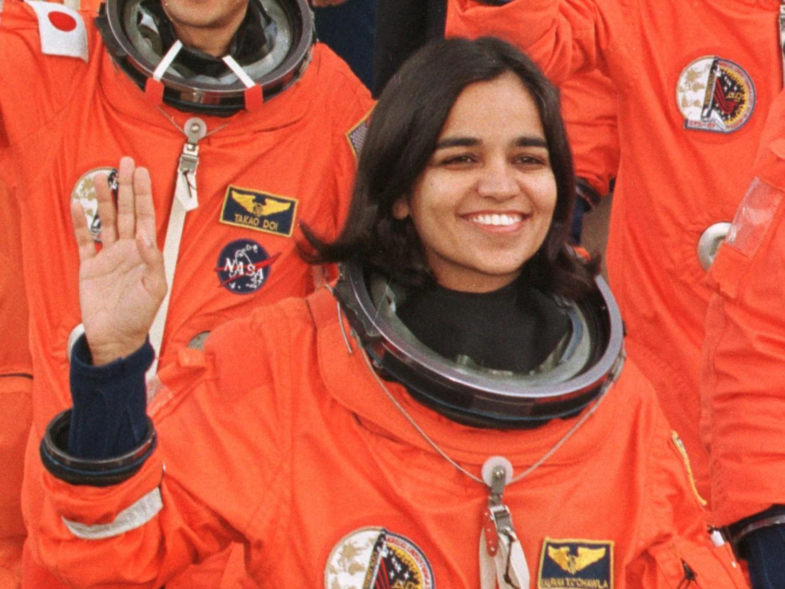
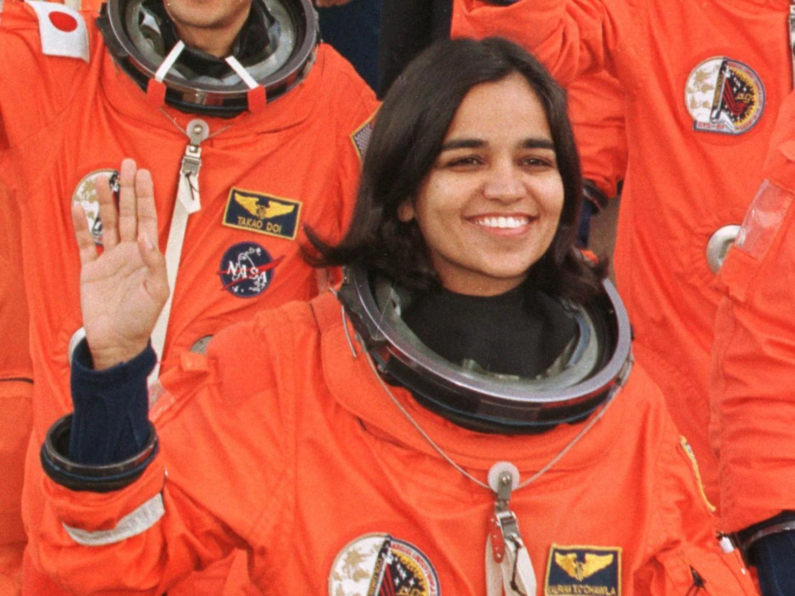

Tribute to Kalpana Chawla

Kalpana Chawla was an Indian-American astronaut and an Aerospace Engineer, renowned for being the first woman of Indian origin to travel to space. Born on March 17, 1962, in Karnal, India, she pursued higher education in the United States, earning degrees in Aerospace Engineering. She joined NASA in 1994 and flew on the Space Shuttle Columbia in 1997. Tragically, her second mission ended with the Columbia disaster in 2003, where all seven crew members lost their lives. Kalpana Chawla is remembered for her pioneering spirit and significant contributions to space exploration.
Biography
Early Life
Kalpana Chawla, born on March 17, 1962, in Karnal, Haryana, India developed an early passion for aviation and space. She excelled academically, completing a Bachelor of Science in Aeronautical Engineering from Punjab Engineering College.
Her ambition led her to the United States in the 1980s, where she earned a Master’s degree in Aerospace Engineering from the University of Texas at Arlington and a Ph.D. from the University of Colorado Boulder. Chawla’s remarkable journey from her hometown in India to becoming an astronaut with NASA is a testament to her dedication and vision. She joined NASA in 1994 and made history as the first woman of Indian origin to fly in space.
Her early education and unwavering determination laid the groundwork for her pioneering role in space exploration.
Education
Kalpana Chawla’s educational journey was marked by her passion for aerospace and engineering. After completing her schooling in Karnal, India, she pursued a Bachelor of Science in Aeronautical Engineering from Punjab Engineering College in Chandigarh, graduating in 1982.
Her academic prowess and drive led her to the United States for advanced studies. She earned a Master’s degree in Aerospace Engineering from the University of Texas at Arlington in 1984.
Her pursuit of excellence continued with a Ph.D. in Aerospace Engineering from the University of Colorado Boulder, completed in 1988. Chawla's education was distinguished by her focus on space technology and engineering, laying a strong foundation for her future career as an astronaut.
Her academic achievements and dedication to her field played a crucial role in her selection as a NASA astronaut and her subsequent contributions to space exploration.
Early Career
Kalpana Chawla's early career was defined by her expertise in aerospace engineering and research. After earning her Ph.D. in 1988, she joined NASA Ames Research Center as a Research Scientist.
There, she specialized in Computational Fluid Dynamics, focusing on the behavior of air and fluids around aerospace vehicles. Her research was instrumental in improving designs for aircraft and spacecraft.
In 1989, Chawla moved to Overset Methods, an aerospace company, where she continued her work in fluid dynamics and engineering. Her contributions in this field were notable, reflecting her deep understanding and innovative approach to aerospace technology. Her exceptional work caught the attention of NASA, leading to her selection as an astronaut candidate in 1994. This transition marked the beginning of her groundbreaking career as an astronaut, building on her solid foundation in aerospace research and engineering.
NASA Career
Kalpana Chawla’s NASA career began in 1994 when she was selected as an astronaut candidate. She made her first spaceflight as a mission specialist on the Space Shuttle Columbia in 1997, contributing to experiments in microgravity. Her successful mission showcased her expertise and commitment to space exploration.
In 2000, Chawla was selected for a second flight, which launched on January 16, 2003, aboard Space Shuttle Columbia. This mission aimed to conduct various scientific experiments, including materials processing and Earth observation. Tragically, on February 1, 2003, during re-entry into Earth's atmosphere, the Space Shuttle Columbia disintegrated, leading to the loss of all seven crew members, including Chawla.
Despite the tragic end, her contributions to space science and her legacy as a pioneering astronaut continue to inspire many. Her work helped advance NASA’s understanding of space and solidified her place as a trailblazer in space exploration.
STS-107 Mission
Kalpana Chawla's STS-107 mission was the second flight of her career and was launched on January 16, 2003, aboard Space Shuttle Columbia. The mission was a dedicated scientific research flight, aiming to conduct a variety of experiments in space.The crew conducted over 80 experiments in fields like materials science, fluid physics, and life sciences.
Chawla, as a mission specialist, was involved in overseeing these experiments and supporting the mission’s objectives. The crew also performed Earth observation tasks to study the planet's climate and geology.
Tragically, the mission ended in disaster on February 1, 2003, when Columbia disintegrated upon re-entry into Earth's atmosphere, resulting in the loss of all seven astronauts onboard. The accident was caused by damage sustained during launch, which led to a breach in the shuttle’s thermal protection system. Despite the tragedy, the mission's scientific contributions continue to be valued.
Legacy
Kalpana Chawla's legacy is a profound testament to her pioneering spirit and dedication to space exploration. As the first woman of Indian origin in space, her achievements broke barriers and inspired countless individuals worldwide.
Her contributions to aerospace engineering and space missions significantly advanced scientific research, particularly through her work on the Space Shuttle Columbia’s STS-107 mission.
Chawla’s legacy endures through numerous honors and tributes, including the naming of schools, institutions, and even an asteroid in her memory. Her life and career have become a symbol of perseverance and excellence, motivating future generations to pursue careers in science and engineering. Her story is celebrated for its blend of exceptional professional achievements and unwavering determination. Despite the tragic end of her career, Kalpana Chawla remains an iconic figure in space exploration, embodying the ideals of courage, innovation, and dedication to advancing human knowledge.
Admirable Qualities
- Perseverance and Determination
- Passion for Aerospace and Engineering
- Trailblazer for Women in STEM
- Inspiration and Role Model
Achievements
Kalpana Chawla's achievements are a testament to her groundbreaking contributions to aerospace engineering and space exploration. Her remarkable career began with her academic pursuits. After earning a Bachelor of Science in Aeronautical Engineering from Punjab Engineering College in Chandigarh, she pursued a Master’s degree in Aerospace Engineering from the University of Texas at Arlington and a Ph.D. from the University of Colorado Boulder.
In 1994, Chawla joined NASA as an astronaut candidate. Her first spaceflight occurred in 1997 aboard the Space Shuttle Columbia (STS-87), where she worked on microgravity experiments, including the investigation of materials and fluid behavior. Her performance on this mission highlighted her exceptional skills and dedication.
Chawla’s second mission, STS-107, launched on January 16, 2003, was a dedicated research flight that focused on a broad array of scientific experiments. As a mission specialist, she was responsible for managing and executing these experiments, which covered various fields such as materials science, fluid physics, and life sciences. The mission also included Earth observation tasks, which contributed valuable data on climate and geological processes.
Despite the tragic end of STS-107 when Columbia disintegrated upon re-entry on February 1, 2003, Chawla’s legacy endures. Her work has had a lasting impact on space science and technology. She is remembered as a pioneering astronaut and a role model for aspiring scientists and engineers, particularly women and minorities. Numerous honors commemorate her achievements, including schools and institutions named in her honor, as well as the naming of asteroid 51826 Kalpanachawla.
Kalpana Chawla’s achievements extend beyond her technical contributions; her life and career continue to inspire future generations to pursue excellence in science and explore new frontiers in space.
Famous Quotes
1. "The moment you say, ‘I am a failure,’ you have no way of recovering. The moment you say, ‘I will try again,’ you’re giving yourself a second chance."
This quote underscores Chawla’s resilience and determination. She believed in the power of perseverance and maintaining a positive attitude, even in the face of challenges.
2. "The path from dreams to success does exist. May you have the vision to find it, the courage to get on to it, and the perseverance to follow it."
Chawla’s words here emphasize the importance of vision, courage, and perseverance in achieving one’s goals. She saw the journey from dreams to success as one that requires a steadfast commitment to one’s aspirations.
3. "The challenge is not to find the new world, but to see the world in a new way."
This quote reflects her belief in the importance of perspective and innovation. Chawla encouraged seeing beyond the obvious and finding new ways to approach problems and opportunities.
4. "To those of you who would dare to dream, be courageous in your pursuit of those dreams. Dare to fail, dare to succeed."
Chawla’s encouragement to dream boldly and embrace both success and failure captures her adventurous spirit. She believed that courage and ambition are essential in the pursuit of one’s dreams.
5. "I have the privilege of being an astronaut. I have the privilege of being a part of a mission to make a difference in our understanding of the universe."
This quote highlights Chawla’s sense of honor and responsibility as an astronaut, reflecting her dedication to advancing scientific knowledge and making a meaningful impact.
Gallery

 

Personal Life
Kalpana Chawla’s personal life was characterized by her deep commitment to her passions, her supportive relationships, and her journey from India to becoming a trailblazing astronaut. Born on March 17, 1962, in Karnal, Haryana, India, Chawla was the youngest of four siblings. From a young age, she displayed a keen interest in aviation and space, often dreaming of becoming an astronaut.
Chawla's family was supportive of her aspirations. Her father, Banarasi Lal Chawla, and her mother, Sanpuran Devi, encouraged her educational pursuits, even as she pursued her ambitions far from home. In 1984, she moved to the United States for higher education, a significant step that marked the beginning of her remarkable career in aerospace.
In 1985, she married Jean-Pierre Harrison, an aviation consultant and pilot. The couple shared a deep bond and mutual interest in aviation. Harrison supported Chawla throughout her career, including during her astronaut training and missions. Despite the demands of her career, Chawla valued her personal life and maintained a close relationship with her family and friends.
Chawla's love for flying extended beyond her professional life. She was an enthusiastic pilot, earning her private pilot’s license and often sharing her passion for aviation with others. Her personal interests included reading, traveling, and exploring different cultures.
Tragically, Chawla’s life was cut short when the Space Shuttle Columbia disintegrated upon re-entry on February 1, 2003, during her second space mission. She is remembered not only for her professional achievements but also for her vibrant personality, dedication to her dreams, and the positive impact she had on those around her. Her legacy continues to inspire many, reflecting the harmony she maintained between her personal passions and professional endeavors.
Tributes and Memorials
Kalpana Chawla’s life and legacy have been honored through numerous tributes and memorials, reflecting the profound impact she had on space exploration and inspiring future generations. Her achievements as an astronaut and her untimely death have led to a variety of commemorations worldwide.
In India, several institutions and landmarks have been named in her honor. The Kalpana Chawla Space Technology Cell at Punjab Engineering College, where she completed her undergraduate studies, is dedicated to promoting aerospace research and education. Her alma mater, Punjab Engineering College, also holds an annual memorial lecture and event in her name.
The Indian government has honored Chawla with several accolades, including the naming of the Kalpana Chawla Award for the best woman scientist in the field of space. Additionally, her birthplace in Karnal has a statue of her, and her contributions are celebrated at local schools and educational institutions.
In the United States, her legacy is commemorated through various tributes. The Kalpana Chawla Memorial Scholarship was established at the University of Texas at Arlington, where she earned her Master’s degree. The scholarship supports students pursuing careers in aerospace engineering. The Kalpana Chawla Memorial Trust also continues to fund educational programs and initiatives that promote STEM fields.
Her name has been immortalized in space as well. Asteroid 51826 Kalpanachawla was named in her honor, ensuring that her legacy will be remembered in the cosmos she loved.
Moreover, Kalpana Chawla’s story is featured in numerous documentaries, books, and educational programs that celebrate her life and achievements. These tributes ensure that her memory endures, inspiring future generations to pursue their dreams and make their mark on the world.